EVENTOS MÁS IMPORTANTES DE LA HISTORIA DEL CLUB 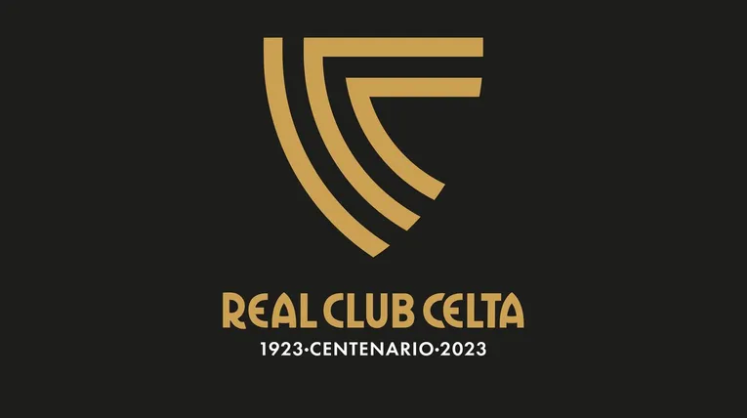
El 23 de agosto de 1923 nace el RC Celta de Vigo tras la fusión del Vigo Sporting y el Fortuna de Vigo gracias al impulso de Manuel de Castro ‘Handicap’ y el abogado Juan Baliño Ledo. Los primeros colores del equipo fueron el rojo y el negro.
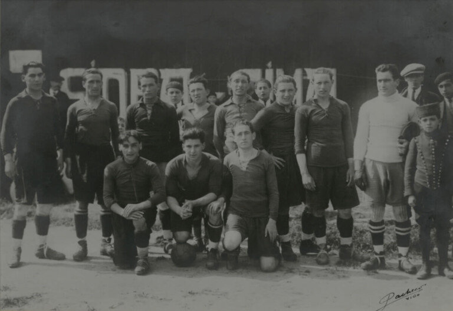El 30 de diciembre de 1928 se produce la inauguración del estadio de Balaídos. El RC Celta se impuso al Real Unión de Irún por 7-0.
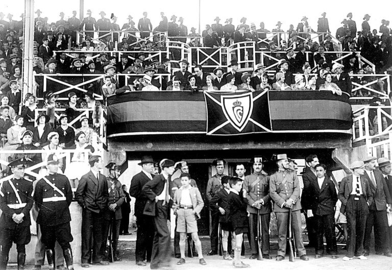El RC Celta consiguió al término de la temporada 1935/36 su primer ascenso a Primera División tras finalizar como primer clasificado en Segunda División.
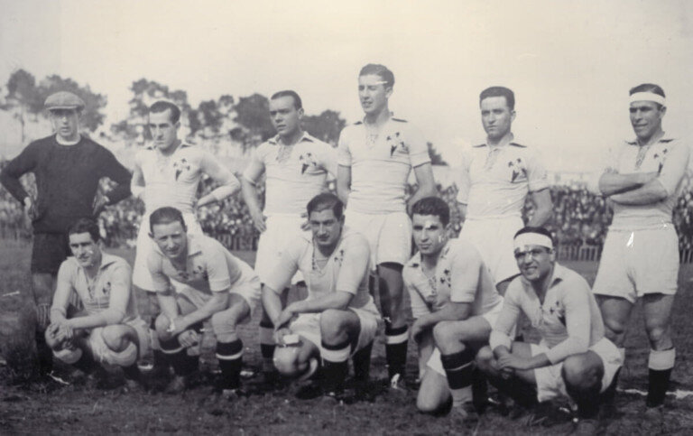Tras tres años sin poder disputar LaLiga por la Guerra Civil, Nolete anotaba el primer gol de la historia del RC Celta en Primera División.
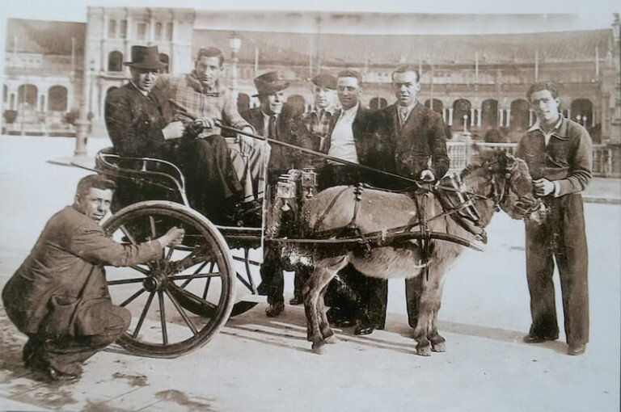En julio de 1945 el alcalde de Vigo, Luis Suárez Llanos Penacho, anuncia la adquisición por parte del Celta del Estadio de Balaídos.

Chamartín acogió la primera final de Copa del RC Celta. Su rival, el Sevilla, se impuso por 4-1 tras quedarse el equipo vigués sin tres jugadores por lesión y sin Pahiño, expulsado.
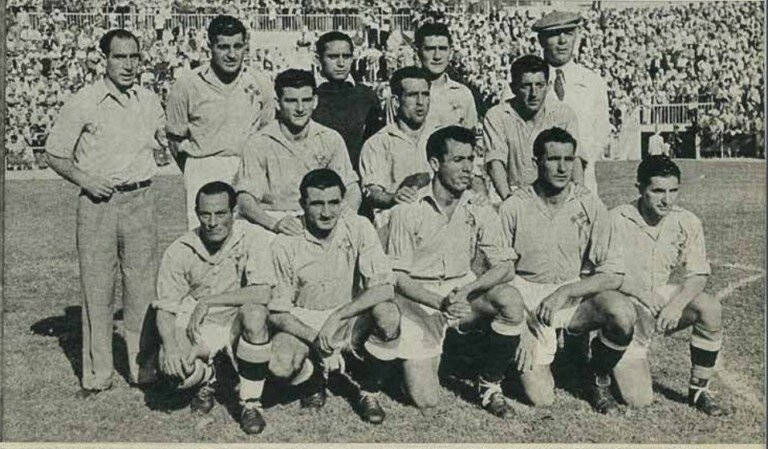El RC Celta se impuso por 10-1 al Nástic, en la que es la mayor goleada de la historia del equipo celeste en Primera División
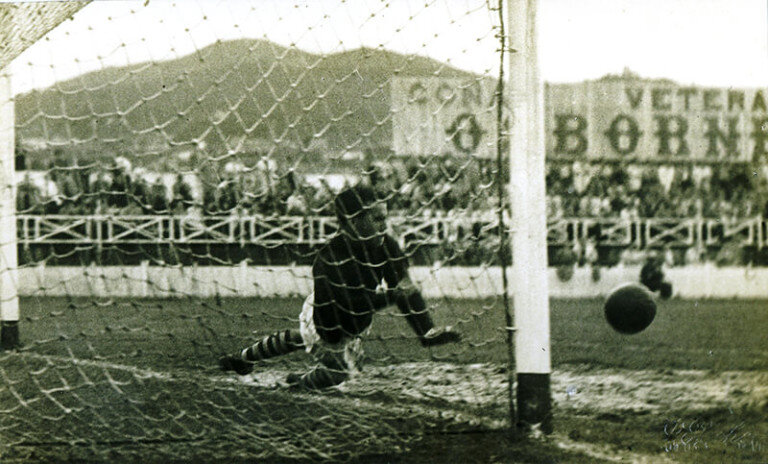Debuta Manolo, el jugador con más partidos en la historia del RC Celta.
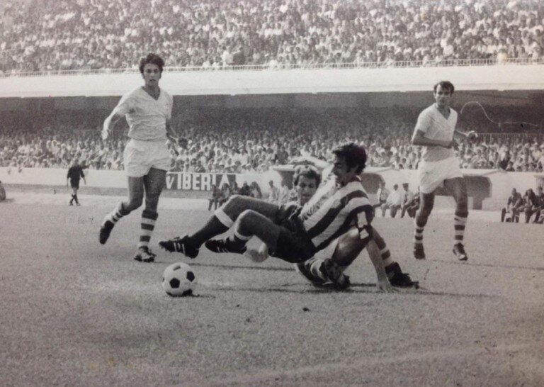El RC Celta consigue su primera clasificación de la historia para disputar competición europea. Su primer rival fue el Aberdeen escocés, que se impuso a los celestes en los dos encuentros de la eliminatoria.
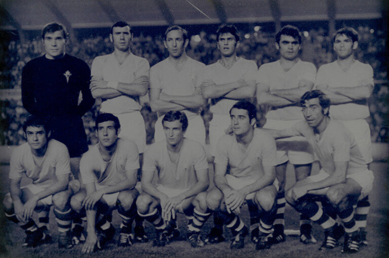El portero Fenoy se convierte en el máximo goleador del equipo esa temporada.
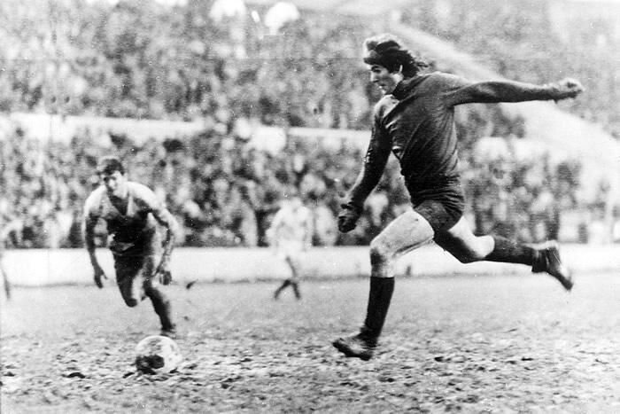Con Pavic en el banquillo, el RC Celta asciende desde Segunda División B a Primera División en apenas dos temporadas
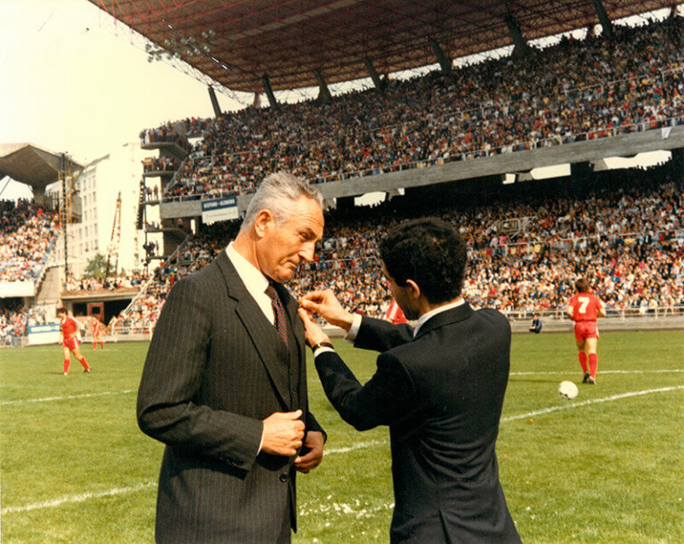Fallece Quinocho, histórico jugador del RC Celta, en un asalto a las oficinas del club.
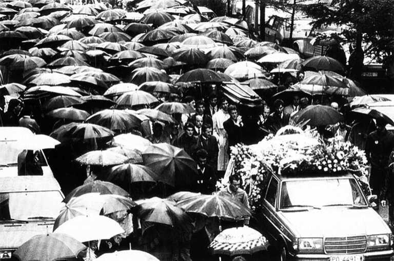El RC Celta disputa su segunda final de Copa ante el Zaragoza. Tras llegar hasta los lanzamientos de penalti, el equipo celeste es superado por el conjunto maño.
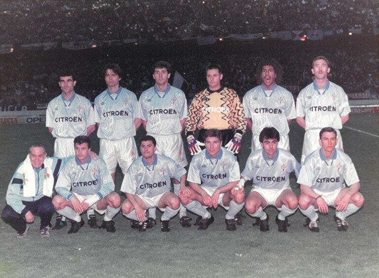El RC Celta consigue ante el FC Argeş Piteşti rumano su primera victoria en competición europea gracias a un gol de Juan Sánchez.
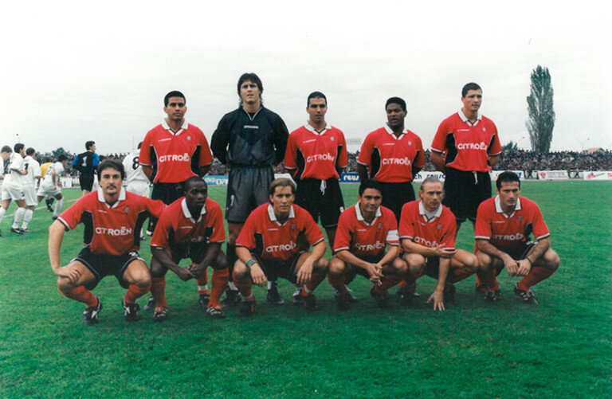El RC Celta se alza con la Copa Intertoto tras superar al Zenit de San Petesburgo en la final.
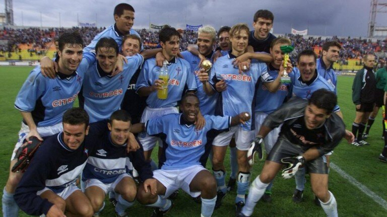El RC Celta vuelve a disputar una final de Copa ante el Zaragoza y de nuevo cae ante el conjunto aragonés.
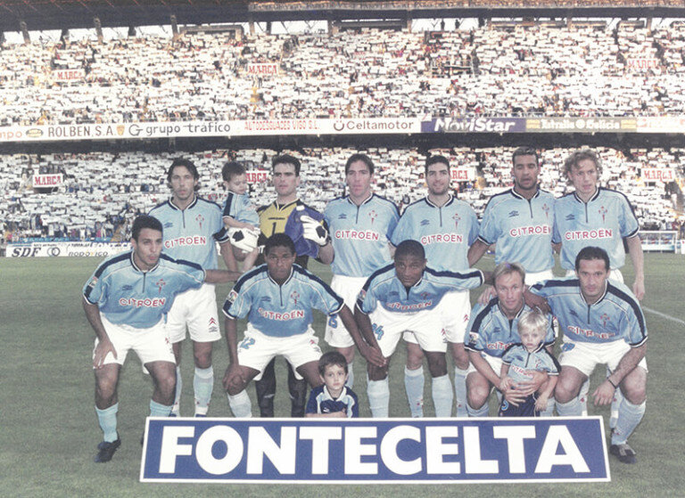Tras una temporada histórica, el RC Celta se clasifica para la Champions League tras finalizar cuarto en Liga y superar al Slavia de Praga en la ronda previa.
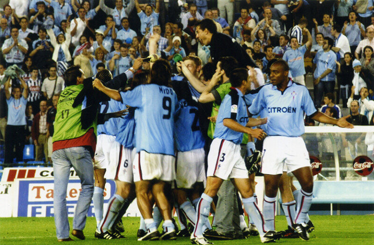El RC Celta consigue el que hasta la fecha es su último ascenso a Primera División.
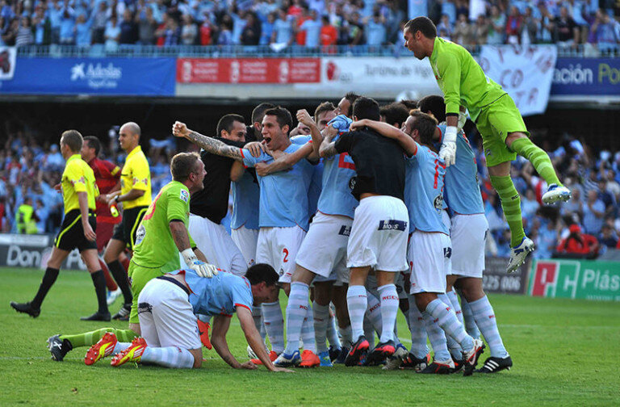El RC Celta logra la histórica permanencia del 4% en un agónico final de temporada.
En una campaña sin precedentes, el RC Celta alcanza las semifinales de Copa y de Europa League. En ambos torneos se queda a las puertas de disputar la final.
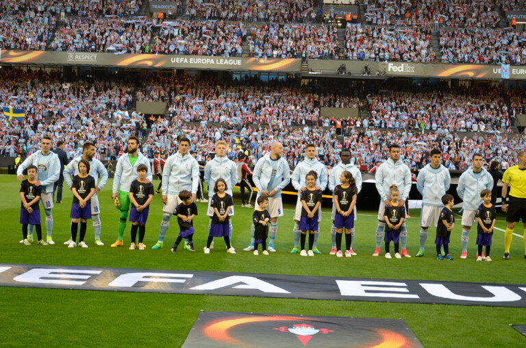En una campaña con la plantilla repleta de canteranos, el RC Celta alcanza la 7ª posición en la Liga EA Sports.De esta manera volverían a clasificar para una competición europea 8 años después.
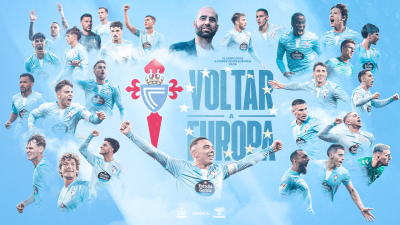HIMNO DEL CLUB
PALMARÉS
-
1936
Campeón Segunda División
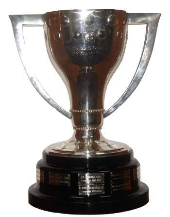 -
1982
Campeón Segunda División
-
1992
Campeón Segunda División